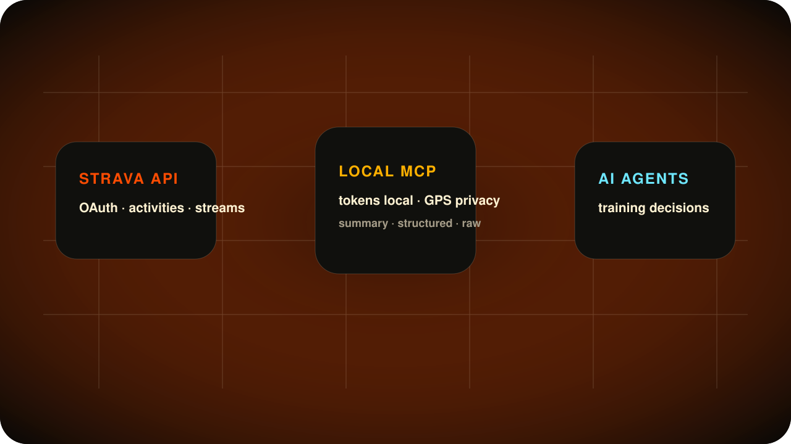

Read the effort
Activities, streams, zones, routes, clubs and gear come from your authorized Strava account.
stravamcp.vercel.app · open source · unofficial
Strava MCP is a local-first bridge that lets AI assistants reason about runs, rides, routes, streams, heart rate, power, elevation and weekly load without handing them your tokens or exposing GPS by accident.
npx -y strava-mcp-unofficial setup
The product idea
Charts tell you what happened. Agents can help decide what to do next: push, consolidate, change route, protect recovery or investigate intensity drift.
Activities, streams, zones, routes, clubs and gear come from your authorized Strava account.
GPS is useful but sensitive. Summary and structured modes avoid raw route geometry unless you explicitly ask.
Your assistant can convert load, distance, elevation, HR and power into practical training decisions.
Data boundary
This bridge uses the official Strava API v3. It can read activity streams when Strava provides them, but it does not claim continuous sensor telemetry.
Runs, rides, swims, distance, moving time, elevation, HR, power, cadence, zones and recorded activity streams.
privacy_mode=raw returns supported Strava endpoint JSON. GPS streams require explicit intent.
Strava activity streams are tied to recorded activities, not continuous wearable telemetry outside workouts.
Local-first architecture
OAuth stays official, tokens stay local, and MCP tools expose clear contracts for agents instead of scraped or ambiguous data.
strava_capabilities explains tools, limits and privacy modes.
Guided setup
Create a Strava app, run three commands, then paste one MCP config into your AI client.
Create a Strava API app, paste credentials into setup, authorize once in the browser, then run doctor.
Copy the delegation prompt below. It tells your assistant exactly what to install and what not to expose.
Jump to agent promptOpen Strava API settings and use a local callback.
http://127.0.0.1:3000/callbackread activity:read_all profile:read_allThe CLI collects credentials, opens Strava in your browser and stores tokens locally. doctor now verifies the token has activity:read_all profile:read_all read before agents start calling activity tools.
npx -y strava-mcp-unofficial setup
npx -y strava-mcp-unofficial auth
npx -y strava-mcp-unofficial doctorUse it with Claude Desktop, Cursor, Windsurf, Hermes, OpenClaw or any MCP-over-stdio client.
Server installs can run the same package: keep config in ~/.strava-mcp/config.json, tokens in ~/.strava-mcp/tokens.json, then verify with hermes mcp test strava.
{
"mcpServers": {
"strava": {
"command": "npx",
"args": ["-y", "strava-mcp-unofficial"]
}
}
}Toolbelt
Start broad with summaries, then drill into a specific activity, stream, route or zone only when it matters.
Trust boundary
Routes can reveal home, work, habits and routines. This MCP is designed so agents get useful training context without seeing OAuth tokens or raw coordinates by accident.
No upload/write scope in the default install.
Tokens live under ~/.strava-mcp/ with user-only permissions.
Raw lat/lng streams require explicit opt-in.
Training context, not diagnosis or treatment.
For AI agents
Give this to an assistant when a non-technical user wants help installing the bridge safely.
Install the unofficial Strava MCP server for me.
Repository: https://github.com/davidmosiah/strava-mcp
Help me create a Strava API app with:
- Redirect URI: http://127.0.0.1:3000/callback
- Read-only scopes: read activity:read_all profile:read_all
Run setup, auth and doctor with npx.
Doctor must confirm oauth.scope_status is ok.
Add the MCP config to my client.
Keep tokens local and never print secrets.
Do not request raw GPS unless I explicitly ask.Open source training agents
Star the repo, inspect the implementation, open issues or adapt the bridge for your own agent workflow.